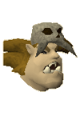

")
Oo'glog (Members)
Warning | Introduction | Location | Points of Interest | Personalities
Quests | Hunters and the Hunted | Miscellaneous
Quests | Hunters and the Hunted | Miscellaneous
Warning
The areas to the west and north of Oo'glog are patrolled by ogress warriors and champions. They are particularly aggressive and more than willing to skewer anyone looking tasty.
To make best use of Oo'glog's facilities, you should play through As a First Resort....
Introduction

The level of welcome you get in Oo'glog is pretty much dependent on how far along you are in the As a First Resort... quest. Anyone who has made their way through it will testify that Oo'glog is, miraculously, a very useful place to visit.
Location

To get to Oo'glog quickly, you can use a ring of duelling or the Spirit Tree Network to teleport to the Mobilising Armies Command Centre, which is a short trek west from Oo'glog.
West of Oo'glog is a large multi-way combat area for practising your abilities with swords, bows or magic.
To the south and east of Oo'glog is the sea. This may seem irrelevant until you realise that Oo'glog can be reached by boat. You'll have to complete As a First Resort... to do so, however.
Points of Interest

For those who like to fight, there is a multi-way combat area to the west and the Mobilising Armies Command Centre beyond that.
For those who like to hunt, there a number of Hunter animals outside the boundaries of Oo'glog. If you have completed As a First Resort..., there are three new Hunter creatures to trap: diseased kebbits, wimpy birds and platypodes.
There are five pools in Oo'glog that have been earmarked as health spas. Having helped Balnea to clear them of insects (or buzzy-buzzies - it depends who you talk to), you will be able to use them for various benefits:
- Bandos pool - shows your allegiance to Bandos
- Sulphur spring - reaffirms faith
- Salt-water spring - speeds up weary feet
- Thermal bath - restores and invigorates
- Mud bath - muffles scents and sharpens Hunter reflexes
Personalities
|

Chief Tess is one of the more articulate and intelligent ogres on RuneScape, which is probably why she has risen to the position of Oo'glog chief. There is also the possibility that Dawg - her pet larupia - and her sheer size may have helped 'persuade' the others to let her oversee the camp.
|
Balnea is a goal-motivated and boundary-pushing individual who is looking to expand her lifeworld by structuralizing a modern health spa. Her professionally-challenged labourforce are a little confused by her over-use of hyphens and propensity for made-up words, but she is none-the-wiser.
|
|
| Chief Tess can be found in the centre of Oo'glog, in her hut. | Balnea can be found in the Oo'glog bank, sketching business battleplans. |

Being a shaman has put Seegud in a position of some eminence in Oo'glog. The secret of her powers is said to be the pools that she maintains for Balnea. With thick skin, the 'buzzy-buzzies' tend to ignore her, so she can take an ogre bath in peace.
|

Less is more; quality not quantity; nouveau cuisine - these are all terms that would make Chargurr look at you blankly, blink and then tear a chunk out of a cooked chompy. Big spits, big fires and big meat are the order of the day, with a garnish of food poisoning.
|
|
| Seegud can be found in her hut, north of Oo'glog bank. | Chargurr is practising her culinary arts in the centre of Oo'glog, outside Chief Tess's hut. |
Quests
The following quest can be started in Oo'glog:
- As a First Resort... (Members)
Hunters and the hunted

Normally considered predators, wolves often find themselves prey in Oo'glog. The ogresses like to kill these creatures for their bones, which they often use for some pretty original ogre accessories. As a result, these wolves have had to become stronger than average to defend themselves.
|

These ogresses have wandered from the camp of Oo'glog to pursue their many different hobbies. Often this can be by hunting, much like their Chief Tess; practising shamanism, like Seegud; or impaling things with spears, like Chargurr. The majority of ogresses go for the latter.
|
|
| Wolves can be found in the multi-way combat area to the west of Oo'glog. | Ogresses wander about the gates of Oo'glog, and the multi-way combat area to the west. |

The ogress warriors are a hefty bunch, who like nothing better than to run humans through with spears. Next on the list is running wolves through with spears. Then it is running giant spiders through with spears. The list could go on.
|

One of the following statements is true: Ogress champions prefer the artistry and ballet-like dance of close-combat fighting, so adopt the club; Ogress champions prefer the look on people's faces as the club smashes it, so adopt the club. |
|
| Ogress warriors wander about the gates of Oo'glog, and the multi-way combat area to the west. | Ogress champions wander about the gates of Oo'glog, and the multi-way combat area to the west. |
Miscellaneous
- A number of herbs and flowers grow to the north of Oo'glog.
- Eucalyptus trees (which requires 58 Woodcutting) flourish to the west.
The following can be done once you have completed, or are, in some instances, partway through the As a First Resort... quest:
- There is a bank in Oo'glog for all of your banking needs. Just don't expect five-star service.
- The Oo'glog ship will ferry you to a number of destinations. Read the Transportation - By Water page to find out more .
- The gift shop in the south-west of Oo'glog stocks a number of useful items, and a number that are slightly more...interesting. Ogre kilts, tops and bottoms anyone? Frawd will also turn any diseased kebbit pelts you have into hats.
- Kringk, Oo'glog's resident hairdresser, will provide you with an ogre wig for 50 coins. Very nice.
- If you are a smidgeon masochistic, there is the unique ogre 'facial', which is entirely free. Visit Muggh for a change of look.
- Chargurr will cook meat for you or will buy some meats from you if you do not want them.
- Slayers tasked with killing jungle strykewyrms will find them on the coast just north-west of the entrance to Oo'glog.

More articles in
Cities and Towns
|
|